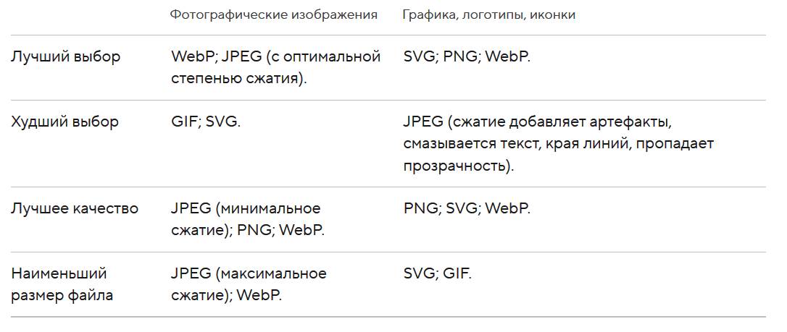

WebP — новый формат, созданный и развиваемый с 2010 года компанией Google.
Главная цель этого проекта — ещё больше уменьшить вес при сохранении такого же качества.
Формат использует новый алгоритм сжатия, в котором искажения отличаются от искажений других форматов. Ухудшается детализация и структура, в то время как края остаются чёткими.
Под фотографическими изображениями понимаются полноцветные фотографии, чёрно-белые фотографии, полноцветные изображения, рисунки с большим количеством разноцветных деталей. Под графикой, логотипами, иконками — графика со множеством сплошных цветов, с небольшим количеством цветов (до 256 цветов), с текстом или линиями, с прозрачностью.
Чтобы лучше понять, для каких изображений лучше подходит формат WebP, перейдите по ссылке и посмотрите наглядные примеры.
Пройдя по этой ссылке вы узнаете, в каких браузерах поддерживается формат WebP.